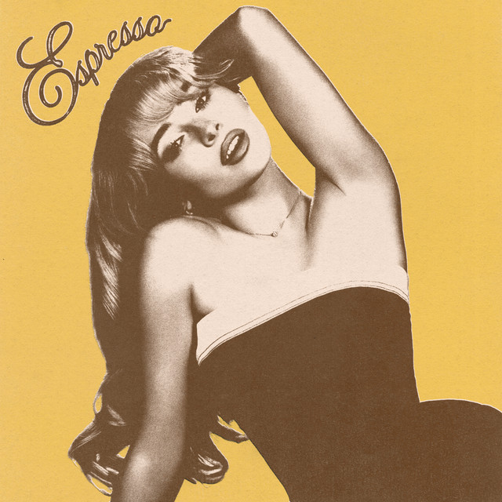
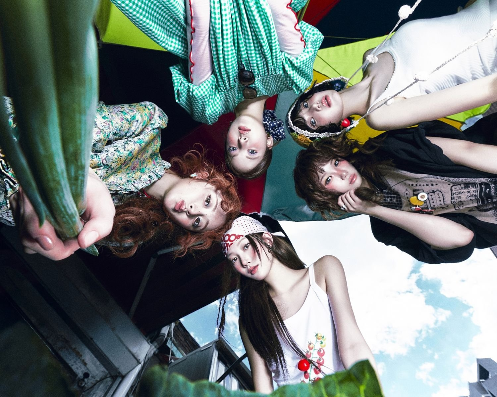
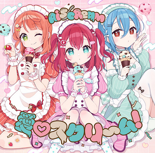
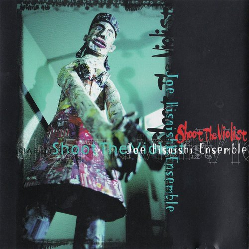
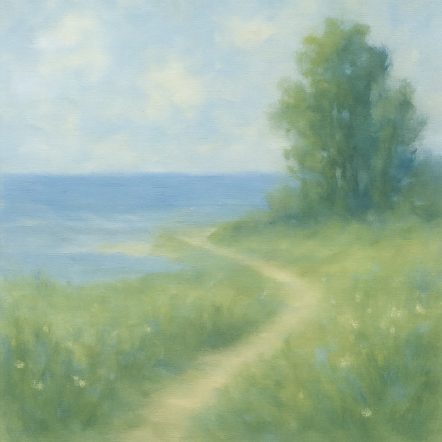

My Gaming Playlists
Currently Playing: K-POP Hype

10 Minutes:
Lee Hyori
CRAZY
LE SSERAFIM
2:50
LOOK AT ME
TWICE
3:14
10 Minutes
Lee Hyori
4:38
 Strategy (feat. Megan Thee Stallion)
TWICE
3:51
Strategy (feat. Megan Thee Stallion)
TWICE
3:51
Good Day
IU
5:13
Rewind
Wonder Girls
3:33
Currently Playing: Distraction Music

Espresso:
Sabrina Carpenter
 Stateside + Zara Larson
PinkPanthress, Zara Larson
3:04
Stateside + Zara Larson
PinkPanthress, Zara Larson
3:04
 Bang Bang
K'NAAN, Adam Levine
3:06
Bang Bang
K'NAAN, Adam Levine
3:06
Espresso
Sabrina Carpenter
3:21

SPAGHETTI
LE SSERAFIM, j-hope
3:19
 Breakin' Dishes
Rihanna
3:21
Breakin' Dishes
Rihanna
3:21

Ai♡Scream! (愛♡スクリ～ム！)
AiScReam
4:40
Currently Playing: Chillin' Peacefully
bee.:
GroovyDominoes52
 Sweden
C418
3:35
Sweden
C418
3:35
 I Thought I Saw Your Face Today
She & Him
2:50
I Thought I Saw Your Face Today
She & Him
2:50
bee.
GroovyDominoes52
1:07

TWO OF US
久石譲アンサンブル
4:58
Loving Machine
TV Girl
3:47

do you think you could love me?
yung kai
3:56